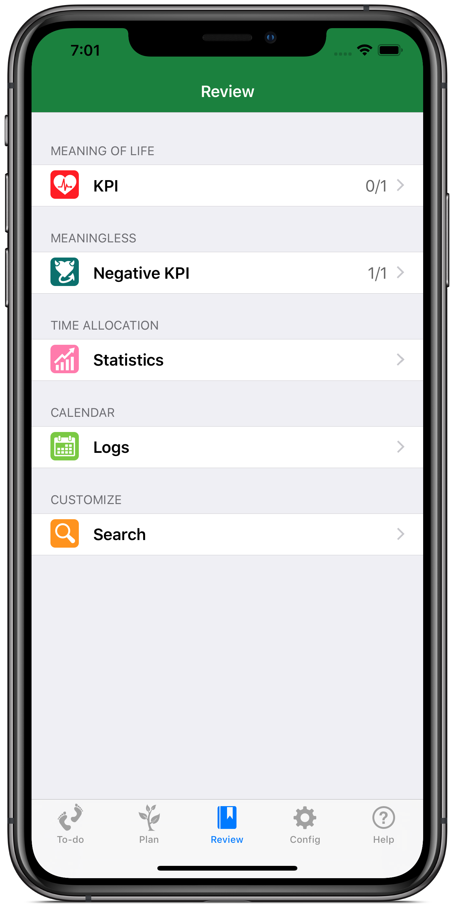

Time Golden Task Manager
TimeGolden is a new generation of time management tool which adopts TimeStamp tracing mode, and has virtues of to-do list and mind mapping etc.
You can use it as a simple to-do list, and you will get crucial data about how your precious time elapses away.
You can use it as a careful planning schedule, layering formidable project into hierarchical tasks, by which you can defeat any difficulty if you put them into practice.
Requirements
- iPhone or iPod touch.
- iOS 10 or later.
Screenshots
{kind=link}
Simple To-do list
Today's to-do list is on this page which supports two basic operations: tapping to record the time and sliding to choose done button. Different from traditional to-do list and time track software, TimeGolden adds footprint button, by which most of the tasks will be tapped several times at intervals. Compared with the "check in/check out" using by the traditional time track software, this "register after actually did" pattern is more flexible, and more conform to the usual practice.

{kind=link}
Clear Review
You will find all the footprint records(TimeStamp) in Review. Only when you confirm the TimeStamp can your new log be generated. Statistics,logs and seach on this page will help you to conduct an analysis of how you spend your time. You can get exact answers to the questions like "how many hours I spent on reading last month?" "When did I charge fees for my phone?" "how did I spend the National Day?" etc.

Hierarchical Plan
This page include Today(today's tasks), Tomorrow(tomorrow's tasks), Scheduled(tasks scheduled in the future), Inbox(quick tasks collection) and Life Tree(all-inclusive data). The Life Tree can be regarded as a structured collector from which the tasks in to-do list are taken automatically or manually and to which the to-do list will reflect the records. The "tree" will grow with you if you keep using TimeGolden.
Features

Time Tracker
TimeGolden records every minute you spend by means of tapping footprints, easy but effective.

Life Tree
Life Tree in TimeGolden transforms your life into a "tree", the branches corresponding to projects and leaves corresponding to tasks. How will your "tree" look like depends on yourself.
Arrangement of the tasks
Your tasks, your choice- you can set your tasks a due date, or set it as a repeated task or it’s duration, just up to you.

Statistics and Search
How did my time slip away? Statistics and Search help you to learn your time allocation in an overall way or during a specific period if you want.
Time log
Don’t like Statistics, but a calendar view? No problem, all the tasks that you have done are visible in a calendar view.

Tomato timer
Are you accustomed to tomato timer to consentrate? No matter using regular interval or tomato interval, TimeGolden can trigger on time.
Task Reminder
Task Reminder keeps you aware of issues to do.
Password Protection
Two ways of password protection can meet you requirements for privacy.
Release Notes
TimeGolden 1.3 Released on 30 Mar, 2019
- Improved stability and bug fixes.
TimeGolden 1.2 Released on 15 May, 2015
- Support apple watch.
TimeGolden 1.1 Released on 25 Nov, 2013
- KPI for recurrent tasks.
TimeGolden 1.0 Released on 10 May, 2013
- First release.
Testimonials
Here's what our customers think about us.
It’s a very powerful time tracker. I was really shocked by the fact that I spent almost 100 hours on playing computer games last month.By William (company clerk)
All the chores have been arranged. I will not miss any important client any more.By Thomas (business man)
Choose what should be done and accomplish it. Using TimeGolden helps me to pull away from postponing-anxiety pattern.By Steven (freelancer)
I have used couple of time-management apps, and this is what I need.Alexandria (college student)